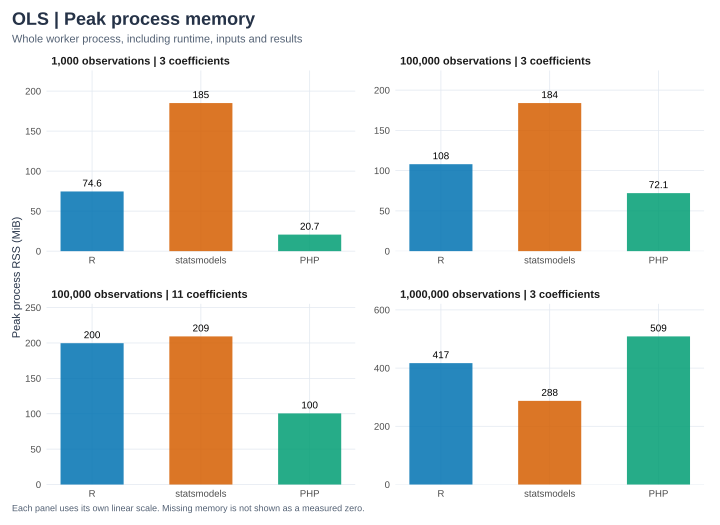

phit’s fit_ols_matrix(), R lm(), and Python statsmodels OLS fit identical simulated observations at four sizes. The results JSON records every timing sample, versions, input hashes, numerical outputs, agreement errors, and machine details.
Methods
Item
Setting
Workloads
1,000, 100,000, and 1,000,000 rows with 3 coefficients; 100,000 rows with 11 coefficients (coefficient counts include the intercept)
Data
Simulated rents, generated with NumPy seed 20261011; all runtimes read the same 17-significant-digit CSV
R’s elapsed timer has millisecond resolution on the recorded Mac, so the 1,000-row fits can read as zero. Use the larger cases to assess scale. A tall model with few predictors and a wider model are different workloads.
Full-fit times for R, statsmodels and PHP in four workloads. Bars show median times; dots show individual repetitions.

Peak whole-process memory for R, statsmodels and PHP in four workloads.
Each panel has its own linear scale, so compare labeled values across panels. Download the timing SVG or PNG and memory SVG or PNG. Rendering redraws the charts from the saved measurements without rerunning the benchmark.
Timing boundaries
Inputs are already PHP arrays, an R data frame, or NumPy arrays when the timer starts. Each timed fit materializes coefficients, covariance, standard errors, Student t tests, p-values, 95% confidence intervals, all fitted values and residuals, RSS, variance, R-squared, and the Gaussian log-likelihood. Cleanup between fits is outside the timer.
Implementation
Timed work
Solver
phit
Validation, copying PHP inputs into Rust, estimation, and converting the full result into PHP arrays with row metadata
Column-scaled SVD
R
lm(), including model and formula construction, and inference
QR
statsmodels
OLS(...).fit(use_t=True), forcing lazy inference and full observation-length outputs
Pseudoinverse (SVD)
These are API-level comparisons, not matrix-kernel or language-speed measurements. The thread settings control common threading differences but do not prove every backend honors them. System activity, caches, and thermal state can affect the timings, and five warm fits on one machine do not establish a general ranking.
Memory and whole-process time
display(ordered_table(memory))
observations
coefficients
implementation
CSV load (seconds)
whole process (seconds)
peak process RSS (MiB)
0
1000
3
R
0.001000
0.202057
74.562500
1
1000
3
statsmodels
0.000516
1.735869
185.062500
2
1000
3
PHP
0.001965
0.011615
20.656250
3
100000
3
R
0.083000
0.550476
107.984375
4
100000
3
statsmodels
0.033716
0.851419
183.957031
5
100000
3
PHP
0.191139
0.336133
72.097656
6
100000
11
R
1.047000
1.684048
199.644531
7
100000
11
statsmodels
0.151442
1.045428
209.242188
8
100000
11
PHP
0.738242
1.037141
100.480469
9
1000000
3
R
2.627000
5.328357
416.988281
10
1000000
3
statsmodels
0.320314
1.656132
287.503906
11
1000000
3
PHP
1.938570
3.319798
508.882812
Whole-process time covers startup and imports, loading, the warm-up, all timed fits, cleanup, and report serialization. It is not a single cold-fit time. Peak RSS covers the whole worker process, including the runtime, inputs, temporary arrays, and results. PHP’s memory limit is disabled for these runs, because a million nested arrays can exceed a web application’s limit.
Simulation and numerical agreement
Area is uniform between 35 and 110 square meters. Bedrooms depend on area plus noise, rounded and bounded to 1–4. Wider models add independent standard-normal amenity scores. Rent follows
The large samples are fresh draws, not copies of the eight teaching rows, and their generating model includes a bedroom effect. The CSV hash, population coefficients, and sample correlations are recorded.
The harness checks every coefficient, covariance entry, standard error, t statistic, p-value, confidence bound, and scalar statistic against R at 1e-9 + 1e-7 * abs(reference), and residual df exactly. Fitted values and residuals are computed in full but compared at ten evenly spaced observations; the small reference tests compare full vectors. The absolute tolerance does not establish relative accuracy for very small p-values.
agreement = []for case in report["cases"]:for name, errors in case["max_absolute_errors_vs_R"].items(): agreement.append({"observations": case["n"], "coefficients": case["p"],"implementation": name, "agreement passed": case["agreement_passed"],"largest absolute difference vs R": max(errors.values())})display(ordered_table(agreement))
observations
coefficients
implementation
agreement passed
largest absolute difference vs R
0
1000
3
statsmodels
True
7.450581e-09
1
1000
3
PHP
True
1.862645e-08
2
100000
3
statsmodels
True
3.337860e-06
3
100000
3
PHP
True
1.001358e-05
4
100000
11
statsmodels
True
7.152557e-06
5
100000
11
PHP
True
5.245209e-06
6
1000000
3
statsmodels
True
2.670288e-05
7
1000000
3
PHP
True
6.103516e-05
The first large-sample run exposed inaccurate 95% Student-t quantiles from statrs’ inverse-beta calculation. phit now finds the critical value by bisecting the Student-t survival function at probability 0.025, and a Rust test checks R qt() references up to 999,997 residual df with absolute error below 1e-8.
On Linux, set matching PHP and PHP_CONFIG. The driver defaults to the release .so. Override STATS_EXTENSION or RSCRIPT when needed.
--cases takes comma-separated n:p pairs, with the intercept included in p and n > p ≥ 3. --repeats sets the number of timed fits.
The driver writes a report only after every case passes. Worker errors and numerical discrepancies fail the run, and workers time out after ten minutes.
A quick harness check that leaves the published report unchanged: